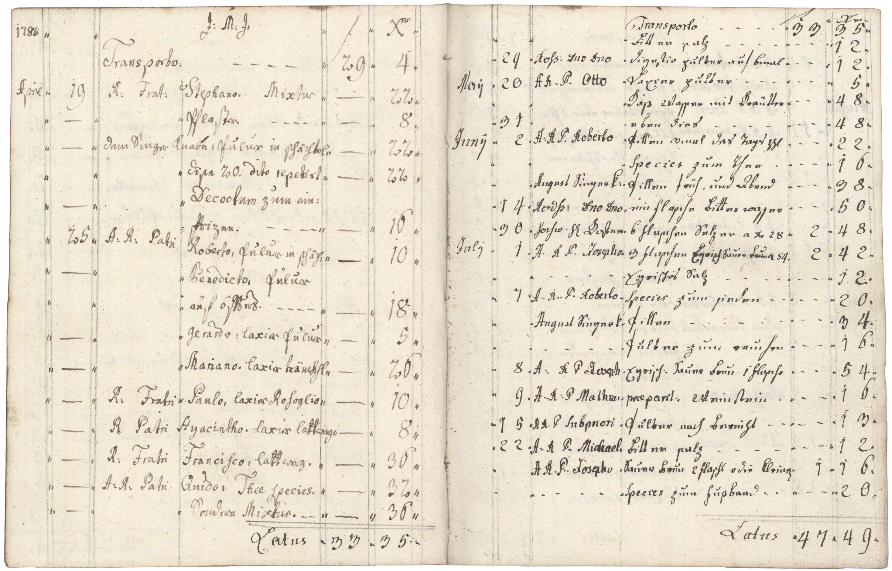

Bayerisches Hauptstaatsarchiv, Kloster Fürstenzell Amtsbücher und Akten 78



Kommentar
Bayerisches Hauptstaatsarchiv, Kloster Fürstenzell Amtsbücher und Akten 78
1785 April 19 - Juli 22 ()
1785 April 19 - Juli 22 ()
Archivaliengattung:
Schwierigkeitsgrad: mittel
Schreiberhände:
- (S1)
Entzifferung
(Absatz Beginn)
1
| 1785 | J()M()J()Fußnote 'a) [orig]' fehlt oder kommt mehrmals vor! | f(lorenos) | Xer | |
| Transporto. | 29 | 4 | ||
| April | 19 | R(everendo) Frat(ri) Stephano. Mixtur | – | 22 |
| – | Pflaster | – | 8 | |
| – | dem Singer Knaben, Puluer in schächtel | – | 22 | |
| dise 20. dito repetirt | – | 22 | ||
| – | Decoctum zum ein- | |||
| 25 | sprizen. | – | 16 | |
| – | A(dmodum) R(everendo) Patri Roberto, Puluer in schäch(tel) | – | 10 | |
| Benedicto, Puluer | ||||
| – | auf öffters | – | 18 | |
| – | Gerardo, laxier Puluer | – | 5 | |
| – | Mariano. laxier tränckhl | – | 26 | |
| – | R(everendo) Fratri Paulo, laxier Rohoglio | – | 10 | |
| – | R(everendo) Patri Hyacintho. laxier lattwerg | – | 8 | |
| – | R(everendo) Fratri Francisco, lattwerg. | – | 36 | |
| – | A(dmodum) R(everendo) Patri Quido, Thee species. | – | 32 | |
| Sondere Mixtur. | – | 36 | ||
| Latus | 33 | 35 |
2
//(Seitenumbruch)
| f(lorenos) | X(e)r | |||
| Transporto. | 33 | 35 | ||
| Bitter salz | - - | 12 | ||
| Maÿ | 29 | Re(ve)r(endi)ss(imo) D(omi)no D(omi)no digestio pulver auf 6mal | - - | 12 |
| 20 | A(dmodum) R(everendo) P(atri) Otto Laxier pulver | - - | 5 | |
| Käß Wasser mit Kraütter | - - | 48 | ||
| 31 | eben dies- | - - | 48 | |
| Junÿ | 2 | A(dmodum) R(everendo) P(atri) Roberto Pillen 3mal des Tags (zu nehmen) | - - | 22 |
| Species zum Thee | - - | 10 | ||
| August Singerkn(aben) Pillen früh und Abend | - - | 38 | ||
| 14 | Re(ve)r(en)d(i)ss(imo) D(omi)no D(omi)no ein flasche Bitter wasser | - - | 50 | |
| 30 | hochw(ürdigen) H(errn) Kastner) 6 flaschen Selzer a x(e)r 28 | 2 | 48 | |
| Julÿ | 1 | A(dmodum) R(everendo) P(atri) Josepho 3 flaschen Cyrisch Sauer Breu a 54 | 2 | 42 |
| Cyrisches Salz | - - | 12 | ||
| 7 | A(dmodum) R(everendo) P(atri) Species zum sieden | - - | 20 | |
| August Singerk(naben) Pillen | - - | 34 | ||
| Pulver zum rauchen | - - | 16 | ||
| 8 | A(dmodum) R(everendo) P(atri) Joseph Cyrisch Sauer Breu 1 flasche | - - | 54 | |
| 9 | A(dmodum) R(everendo) P(atri) Mathias præpari(r)t(en) Weinstein | - - | 16 | |
| 15 | A(dmodum) R(everendo) P(atri) Subpriori Pulver nach Bericht | - - | 13 | |
| 22 | A(dmodum) R(everendo) P(atri) Michael Bitter salz | - - | 12 | |
| A(dmodum) R(everendo) P(atri) Josepho Sauer Breu 2 flaschl v(on) die kleine(n) | 1 | 62 | ||
| 22 | Species zum fußbaad | - - | 20 | |
| 22 | Latus | 47 | 49 |
(Absatz Ende)
Transkription
(Absatz Beginn)
1
| 1785 | J()M()J()Fußnote 'a) [reg]' fehlt oder kommt mehrmals vor! | f. | x. | |
| Transporto. | 29 | 4 | ||
| April | 19 | reverendo fratri Stephano: mixtur | – | 22 |
| – | pflaster | – | 8 | |
| – | dem singerknaben: pulver in schächtel | – | 22 | |
| dise 20 dito repetirt | – | 22 | ||
| – | decoctum zum ein- | |||
| 25 | sprizen | – | 16 | |
| – | admodum reverendo patri Roberto: pulver in schächtel | – | 10 | |
| Benedicto: pulver | ||||
| – | auf öffters | – | 18 | |
| – | Gerardo: laxierpulver | – | 5 | |
| – | Mariano: laxiertränckhl | – | 26 | |
| – | reverendo fratri Paulo: laxierrohoglio | – | 10 | |
| – | reverendo patri Hyacintho: laxierlattwerg | – | 8 | |
| – | reverendo fratri Francisco: lattwerg | – | 36 | |
| – | admodum reverendo patri Quido: theespecies | – | 32 | |
| sondere mixtur | – | 36 | ||
| latus | 33 | 35 |
2
//(Seitenumbruch)
| f. | x. | |||
| Transporto. | 33 | 35 | ||
| bittersalz | – | 12 | ||
| maÿ | 29 | reverendissimo domino domino: digestiopulver auf 6mal | – | 12 |
| 20 | admodum reverendo patri Otto: laxierpulver | – | 5 | |
| käßwasser mit kraütter | – | 48 | ||
| 31 | eben dies- | – | 48 | |
| junÿ | 2 | admodum reverendo patri Roberto: pillen 3mal des tags (zu nehmen) | – | 22 |
| species zum thee | – | 10 | ||
| August singerknaben: pillen früh und abend | – | 38 | ||
| 14 | reverendissimo domino domino: ein flasche bitterwasser | – | 50 | |
| 30 | hochwürdigen herrn kastner: 6 flaschen selzer a x. 28 | 2 | 48 | |
| julÿ | 1 | admodum reverendo patri Josepho: 3 flaschen cyrisch sauerbreu a 54 | 2 | 42 |
| cyrisches salz | – | 12 | ||
| 7 | admodum reverendo patri: species zum sieden | – | 20 | |
| August singerknaben: pillen | – | 34 | ||
| pulver zum rauchen | – | 16 | ||
| 8 | admodum reverendo patri Joseph: cyrisch sauerbreu 1 flasche | – | 54 | |
| 9 | admodum reverendo patri Mathias: praeparirten weinstein | – | 16 | |
| 15 | admodum reverendo patri subpriori: pulver nach bericht | – | 13 | |
| 22 | admodum reverendo patri Michael: bittersalz | – | 12 | |
| admodum reverendo patri Josepho: sauerbreu 2 flaschl von die kleinen | 1 | 62 | ||
| 22 | species zum fußbaad | – | 20 | |
| 22 | latus | 47 | 49 |
(Absatz Ende)